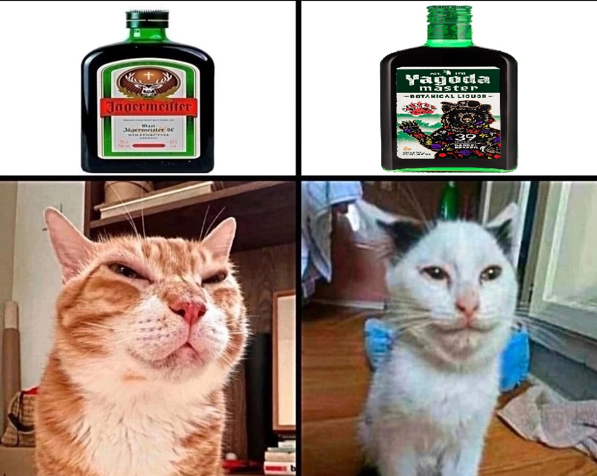

Главная | О нас
Jagermeister - Поясняем на котятах
ЧТО ТАКОЕ Jagermeister ???
Егермейстер (Jägermeister) — немецкий травяной ликер (биттер) крепостью 35%, который выпускается с 1934 года компанией Mast-Jägermeister SE. Напиток относится к категории дижестивов и является одним из самых узнаваемых брендов в мировой алкогольной индустрии.
История Jagermeister
Рецепт ликера разработал Курт Маст, сын владельца уксусного завода в городе Вольфенбюттель. Изначально напиток создавался как согревающий и укрепляющий эликсир для охотников. Название Jägermeister переводится с немецкого как «старший егерь» или «мастер-охотник».
Логотип бренда — голова оленя с сияющим крестом между рогами — основан на древней европейской легенде о святом Губерте, покровителе охотников, который по преданиям обратился в веру после того, как увидел в лесу это знамение.
Почему выбирают Jagermeister?

Состав и особенности производства
Точный рецепт ликера держится в секрете. Известно, что в его состав входит 56 натуральных компонентов, среди которых:
- Корень имбиря, солодка и звездчатый анис;- Корки горьких и сладких апельсинов, черника;- Женьшень, шафран, лаванда и ромашка;
Мазелов и Егермейстер

История Мазелова и Егермейстера — это локальный мем и сквозная шутка в русскоязычном стримерском сообществе, связанная с популярным блогером, стримером на Twitch и музыкантом Ильей mazellovvv (mzlff) Коряковым.
Взаимоотношения стримера с этим немецким ликером развивались на протяжении его карьеры и превратились в полноценный культ внутри фан-базы:
- Главный атрибут прямых трансляций: В определенный период стримов Егермейстер стал визитной карточкой Ильи. Бутылка этого ликера регулярно появлялась в кадре во время разговорных трансляций, комментирования видео или совместных посиделок с другими участниками сообщества (например, из сквада «Хазяева» или «89 SQUAD»).- Мемы про «целебные свойства»: Мазелов иронично позиционировал употребление Егермейстера не как распитие алкоголя, а как «лечение» или «профилактику». Из-за исторического прошлого ликера (который изначально создавался на основе аптекарских трав как дижестив) в чате и нарезках TikTok развился культ шуток про «56 целебных трав от Мазелова».- Ролики и нарезки фанатов: Аудитория стримера создала сотни фанатских видео под названиями в духе «50 способов использовать Егермейстер от Мазелова», «Мазелов и его любовь к Егерю» или «Лучшие моменты Мазелова с Егермейстером». Каждое появление бутылки в кадре сопровождалось спамом тематических смайликов в чате Твича.- Музыкальные отсылки: Тема алкоголя, вечеринок и конкретных брендов периодически проскальзывает в его рэп-треках, баттловых выступлениях и фристайлах, закрепляя за ним образ главного амбассадора этого напитка на платформе.